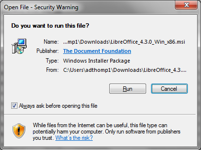
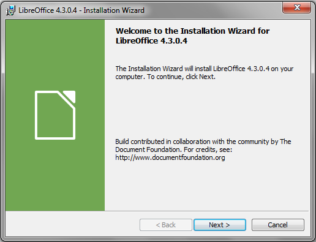
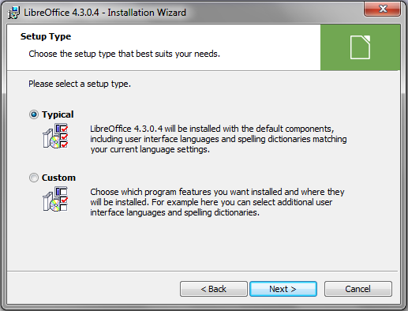
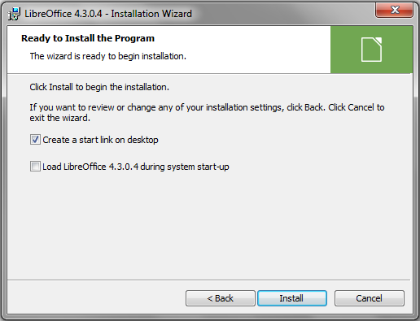

Once the installer has completed downloading, open the installer.
A pop-up may appear with a security warning. If it does, click "Run" to proceed. (Figure 4)

Figure 4: Windows Security Pop-up
The Installation Wizard will now step you through the installation process. Click "Next" to proceed. (Figure 5)

Figure 5: LibreOffice Installation Wizard
The wizard will give you the options to install with a Typical or Custom Setup. For most users, the Typical Setup will be sufficient. Click "Next" to proceed. (Figure 6)

Figure 6: LibreOffice Installation Types
Click "Install" to begin the installation. (Figure 7)

Figure 7: LibreOffice Installation Wizard
Once the installation has completed, click "Finish" to close the Installation Wizard.
LibreOffice 4.3 has now been installed successfully!